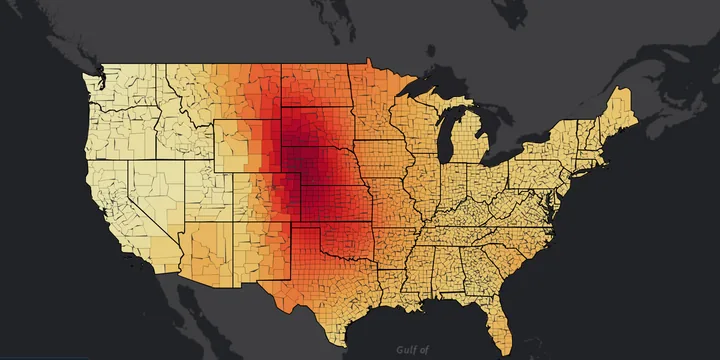
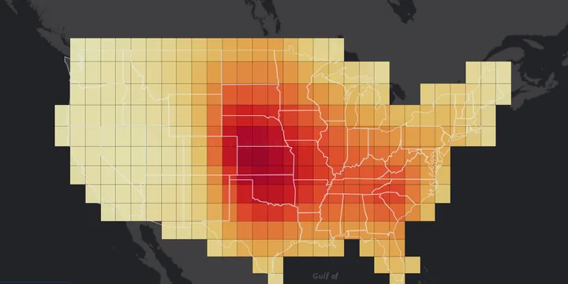

Extreme Weather: Maps and Trends
Interactive maps and explorers for extreme weather. Many things a work in progress, new updates expected regularly. Email me if there is a feature you would like to see added!
- Tropical Cyclones
- Severe Weather
- Updated regularly
Tropical Cyclones
Historical Event Viewer
Historical Trends
Severe Weather wind, hail, tornado, derecho, freezing rain
Historical Event Viewer
Historical Trends

Climatology & Trends — county level
Paired climatology and trend maps at U.S. county resolution, with annual and month-by-month series. Hail, tornado, thunderstorm wind, freezing rain and peak wind.

Climatology & Trends — 2° grid
The same paired maps binned into a regular 2° grid.